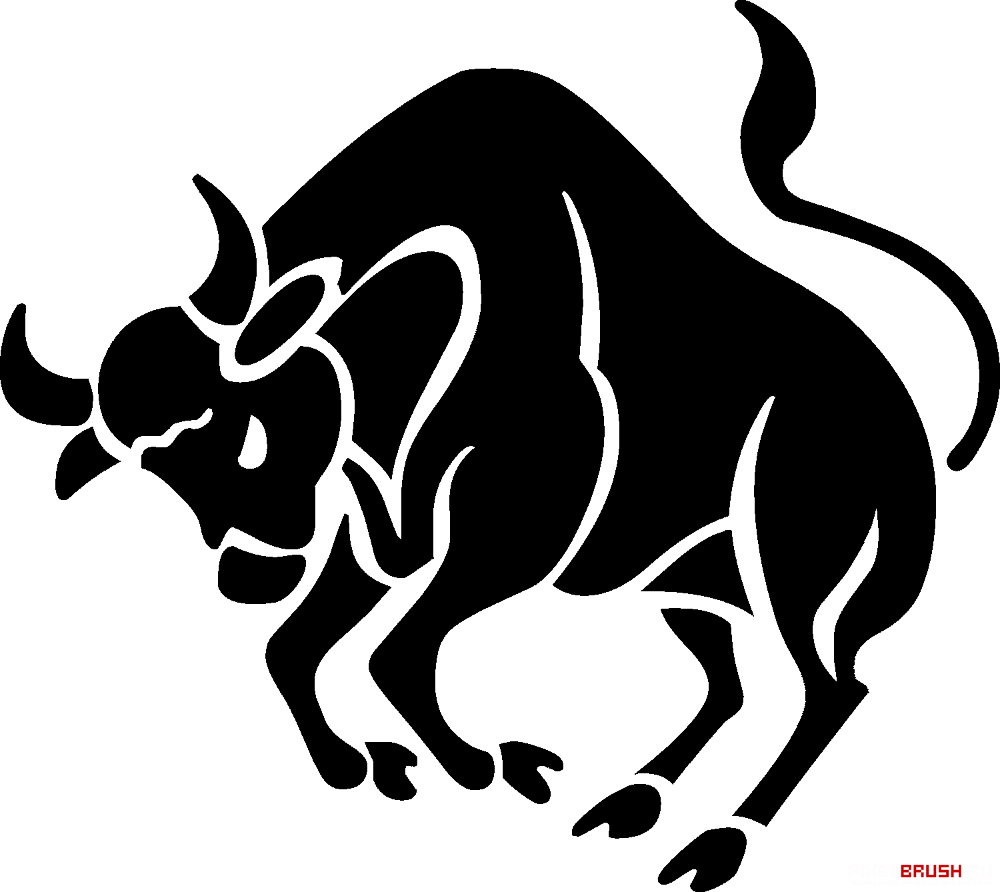
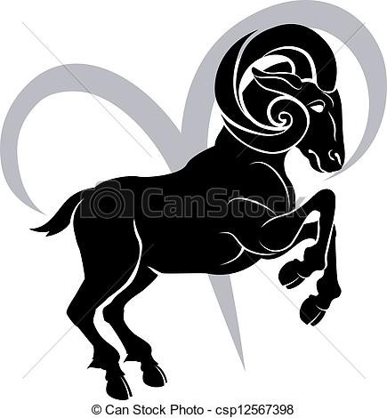
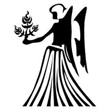

First post
| 
Taureau :20 avril-20 mai |

Belier :21 mars-19 avril |
Gemeaux :21 mai-20 juin |

Cancer :21 juin-22 juillet |

Lion :23 juillet-22 aout |

Vierge :23 aout-22 septembre |

Balance :23 septembre-22 octobre |

Scorpion :23 octobre-21 novembre |

Sagittaire :22 novembre-21 decembre |
 Capricorne :22 decembre-19 janvier |

Verseau :20 janvier-18 fevrier |

Poisson :19 fevrier-20 mars |